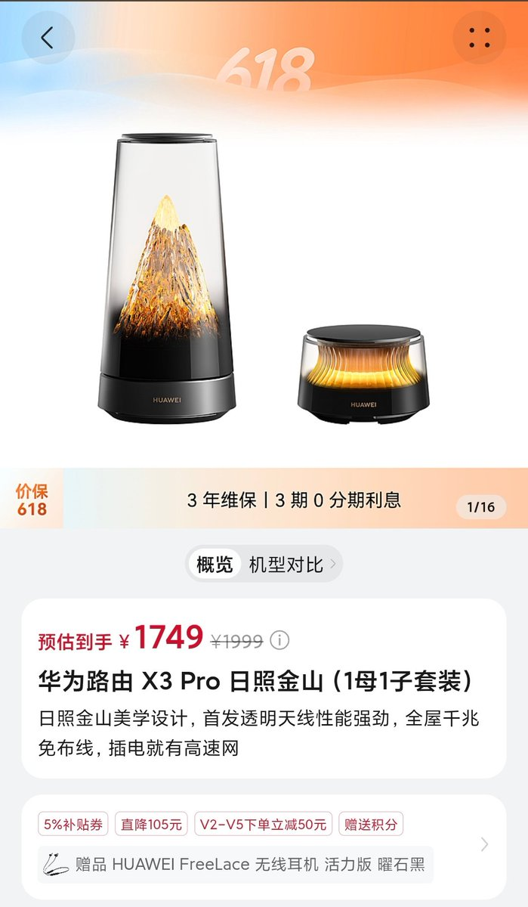
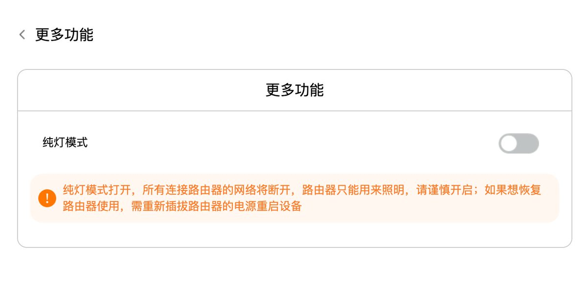

小虚空🍥
@tokerumaisurii
@realNyarime 这个全屋千兆免布线，插电就有高速网是Mesh还是内置了个电力猫（（
而且母机总得有线输入吧，不然还得有个带无线的光猫？


奶昔🥤
@realNyarime
华为路由 X3 Pro 日照金山（1母1子套装）美学设计，首发透明天线性能强劲，全屋千兆免布线，插电就有高速网
还有纯灯模式，打开后路由器只能用来照明，要恢复只能拔电重启，真是一款集天线和网口于一体的小夜灯
买灯送路由，还得是华而不实、为所欲为！ https://t.co/fmQEjJBeOe